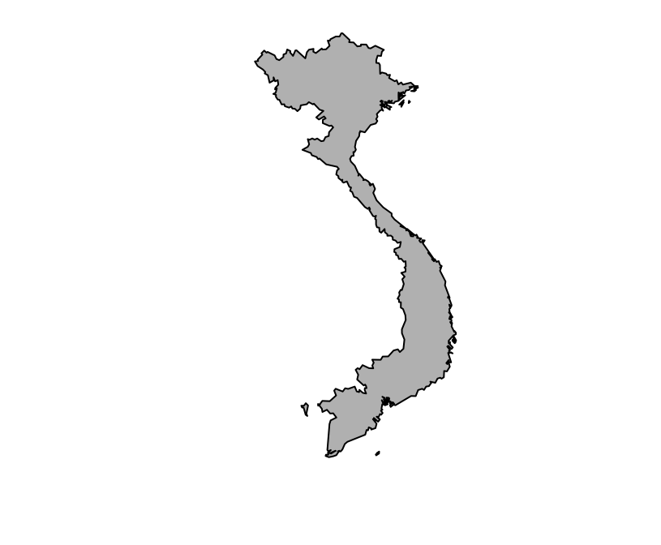

The goal of gadmSEA is to ease the drawing of location maps of any set of countries from Southeast Asia. This package contains no function and basically simply provides the polygons of the following 28 countries: Afghanistan, Bangladesh, Bhutan, Cambodia, China, India, Japan, Indonesia, Japan, Kazakhstan, Korea, Kyrgystan, Lao PDR, Malaysia, Mongolia, Myanmar, Nepal, North Korea, Paskistan, Papua New Guinea, the Philippines, Russia, Singapore, Sri Lanka, Taiwan, Tajikistan, Thailand, Uzbekistan and Vietnam. These polygons come from GADM.
You can install gadmSEA from github with:
> # install.packages("devtools")
> devtools::install_github("choisy/gadmSEA")The list of available countries can be seen with the mcutils::dataset function that returns the list of the names of the data sets available in a given package.
> mcutils::datasets("gadmSEA")
#> [1] "afghanistan" "bangladesh" "bhutan" "cambodia"
#> [5] "china" "india" "indonesia" "japan"
#> [9] "kazakhstan" "korea" "kyrgyzstan" "laos"
#> [13] "malaysia" "mongolia" "myanmar" "nepal"
#> [17] "northkorea" "pakistan" "papuanewguinea" "philippines"
#> [21] "russia" "singapore" "srilanka" "taiwan"
#> [25] "tajikistan" "thailand" "uzbekistan" "vietnam"The package mcutils can be installed from GitHub:
> # install.packages("devtools")
> devtools::install_github("choisy/mcutils")To load a specific country, we can either access directly to the data set:
> vietnam <- gadmSEA::vietnamor use the utils::data function:
> data(vietnam, package = "gadmSEA")These polygons are of class SpatialPolygonsDataFrame:
> class(vietnam)
#> [1] "SpatialPolygonsDataFrame"
#> attr(,"package")
#> [1] "sp"and can be plotted with the sp::plot corresponding method:
> sp::plot(vietnam, col = "grey")